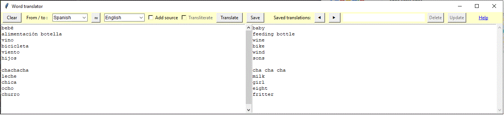

Application translates one word at a time.
One can infer and save a more accurate translation.
Recommendations:
- Change languages that are listed first at the combobox,
by editing ltrans/config_trans.json
- Adjust word translations by editing files in
ltrans/dictionaries
- For a few languages such as Russian and Greek,
select Transliteration checkbox
to get a rough pronunciation of source or destination words.
Transliteration converts non-latin characters to latin characters.
- Adjust translations and add comments before clicking
Save
- Correct saved translations/comments and click
Update
- Rename and number saved translations in
ltrans/saved-translations.
Because files are sorted, you may include a number prefix.
- Prevent accidental deletes - make files in
ltrans/saved-translations Read-Only
Technical info: README.rst